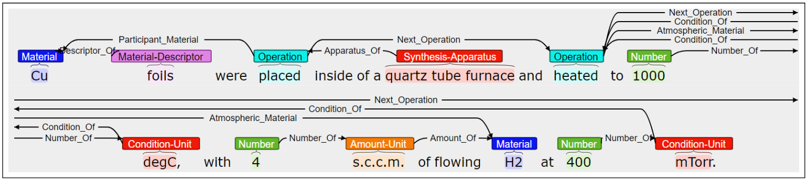
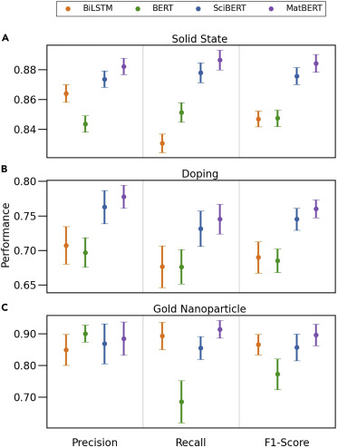
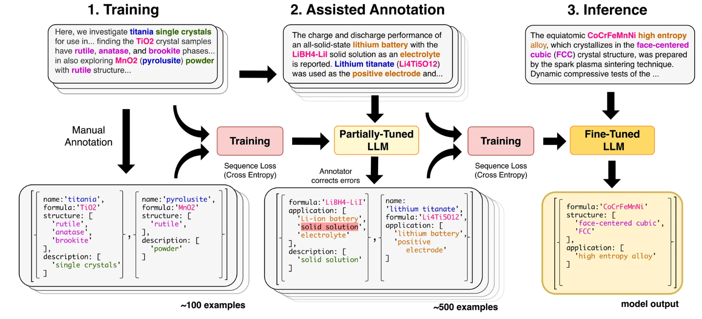
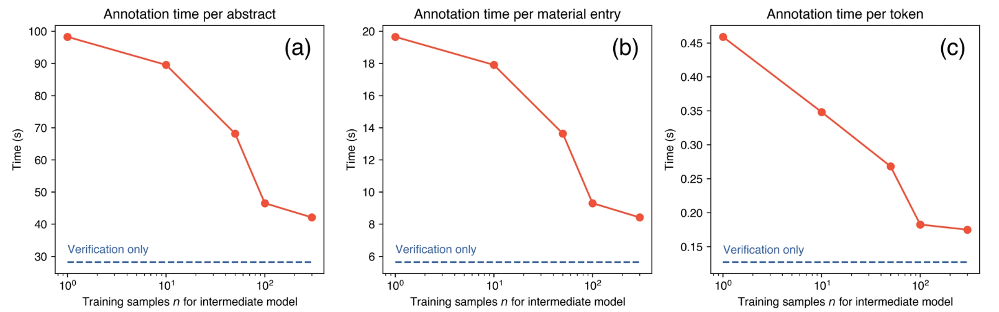

Why discussing this paper?
I chose Dagdelen et al.’s paper (Dagdelen et al. 2024) for our journal club because:
- It is one of the last published papers to fine-tune a model for the data extraction task for materials science.
- It presents a very robust fine-tuning and evaluation process.
- Furthermore, they show how the current models can help with a tedious task such as it is annotating data.
Context
Extracting the unstructured scientific information from the articles that contain it can be a really arduos and time-consuming task. In the recent years, several works have shown the great potential that LLMs have to greatly accelerate this task. However, for some research fields or harder extraction schemas, the general pre-training of these models might not be enough to archieve the desired results. For such cases, fine-tuning have shown to be the adequate technique.
Prior work
Old ages
Several works from the Ceder group showed the complete tedious process. First, Huo et al. (Huo et al. 2019) use LDA + RF to classify text. To train the RF model they had to manually label 6000 materials paragraphs as they contain synthesis information or not.
In a following work, Kononova et al. (Kononova et al. 2019) trained a Word2Vec model, to then feed the embeddings to a BiLSTM-CRF. To train this NN they manually annotated more than 800 paragraphs word-by-word with tags about solid-state synthesis role (material, target, precursor or other). Furthermore, to classify the synthesis operations (NOT OPERATION, MIXING, HEATING, etc) they trained another NN with more annotated data. To this step they also had to LEMMATIZED the sentences and obtain each token’s POS. Amazing hard work!
Similar works by Kim et al. (Kim et al. 2017, 2020; Mysore et al. 2019) in which they applied similar techniques such as word embeddings from language models, then fed to a named entity recognition model.

ChemDataExtractor 1.0 and 2.0
Cole et al. (Swain and Cole 2016; Mavračić et al. 2021) developed ChemDataExtractor which is build from the combination of traditional ML techniques for each NLP task such as lemmatazion, tokenization, POS tagging, it even include Table Parsing. All of these models trained in chemical text, which made this tool a really good option for extracting chemical data from text.
Trewartha et al. (2022)
Trewartha el al. (Trewartha et al. 2022) compared the performance of a simpler model such as a BiLSTM RNN with three more complex transformer models, BERT, SciBERT and MatBERT for the NER task. For that, they used data from three different NER datasets, each one related with different materials synthesis.
The results, showed that the more specialized BERT models were able to better recognize the different entities. However, it is important to remark that the BERT models were fine-tuned for the task.

Problem setting
- Almost all the scientific knowledge is contained in scientific texts in an unstructured way.
- The classical approaches include a lot of different techniques, each of them has to be trained independently.
- For those classical techniques, a lot manually labeled data is needed for each task and technique.
- LLMs appear to simplify a lot all the previous options by allowing to perform all the different NLP tasks with one unique model.
Approach
They proposed to fine-tune two models, one open-source Llama-2 70B model and a close-source one such as GPT-3, for the NER and RE tasks applied to solid-state materials. As output, they compared two different options: JSON and plain text. They proposed this for three different specificities of data: Doping, MOF and general materials data.
| Task | Training samples | Completion format |
|---|---|---|
| Doping | 413 sentences | JSON |
| Doping | 413 sentences | English sentences |
| MOFs | 507 abstracts | JSON |
| General materials | 634 abstracts | JSON |
Results
The results showed first of all that both models performed similar for the tasks. For the exact match, GPT-3 performed slightly better than the Llama-2 model, with overall results for both models around 50% considering all the tasks.
| Task | Relation | E.M. F1 GPT-3 | E.M. Llama-3 |
|---|---|---|---|
| Doping | host-dopant | 0.726 | 0.821 |
| General | formula-name | 0.456 | 0.367 |
| General | formula-acronym | 0.333 | 0.286 |
| General | formula-structure/phase | 0.482 | 0.470 |
| General | formula-application | 0.537 | 0.516 |
| General | formula-description | 0.354 | 0.340 |
| MOFs | name-formula | 0.483 | 0.276 |
| MOFs | name-guest specie | 0.616 | 0.408 |
| MOFs | name-application | 0.573 | 0.531 |
| MOFs | name-description | 0.404 | 0.389 |
- E.M. stands for exact match
- The results presented in this table include for both NER and RE NLP tasks.
It is important to comment that the exact match is an approximate lower bound on information extraction performance, since it not consider some cases such as “Lithium ion” named as “Li-ion”, or MOF names such as “ZIF-8” that are described as “mesostructured MOFs formed by Cu2+ and 5hydroxy-1,3-benzenedicarboxylic acid”.
For correctly measure those ambiguities, they did a manual evaluation on a randomly sampled 10% of the test set. These results showed that the score for the extraction was much better than the showed by the exact match. This also showed that some kind of normallization proccess is needed to correctly evaluate this type of extraction tasks.
For the Doping task, three different output schema were consider, DopingEnglish, DopingJSON and DopingExtra-English. They compared the results for the three schema GPT-3 and Llama-2 fine-tuned models with other older models such as MatBERT and Seq2rel.
The difference between DopingEnglish and DopingExtra-English is that the last one include some additional information and not only the host-entity relation.
The results showed that the Llama-2 model return the best results for this task, which are slightly better than the GPT-3 ones. Both LLMs improved by far the other two models.
| Model | Schema | E.M. Precision | E.M. Recall | E.M. F1 |
|---|---|---|---|---|
| MatBERT | n/a | 0.377 | 0.403 | 0.390 |
| Seq2rel | n/a | 0.420 | 0.605 | 0.496 |
| GPT-3 | Doping-JSON | 0.772 | 0.684 | 0.725 |
| GPT-3 | Doping-English | 0.803 | 0.754 | 0.778 |
| GPT-3 | DopingExtra-English | 0.820 | 0.798 | 0.809 |
| Llama-2 | Doping-JSON | 0.836 | 0.807 | 0.821 |
| Llama-2 | Doping-English | 0.787 | 0.842 | 0.814 |
| Llama-2 | DopingExtra-English | 0.694 | 0.815 | 0.750 |
A limitation of the method could be that for each of the three extractions tasks, they have to annotate between 100 and 500 text passages. This can be a tedious work. However, to overcome this limitation, they proposed to include human-in-the-loop annotation.
Human-in-the-loop
To overcome the limitation of having to manually annotate all the data needed for the fine-tuning process, they sucesfully implemented human-in-the-loop annotation. For that, they fine-tune the model with a small amount of manually labelled data. Then the model is asked to extract data from the other text passages. The returned data by the model is corrected by an human annotator and is feed into the model to further fine-tune it.

By using this technique, they greatly reduce the amount of time needed to annotate the last pieces of text compared with the first ones.

By using this annotation method they greatly improve the annotation time solving one of the main drawbacks of fine-tuning an LLM. This great limitation can be seen in another works such as the one by Guo el al. (Guo et al. 2021) in which they employed 13 graduate and postdoc students to annotate about chemical reactions. After that, they have to even check all the annotation. They estimate that this process took them almost 300 hours.
Take aways
- Open source models with proper tuning can yield high-quality results similar to those of closed source models.
- Despite some labeled data is needed, the process is simplified a lot with the use of LLMs.
- With the fasst and continuous development of the current models, maybe fine-tuning for a simpler task such as data extraction is no furhter needed.